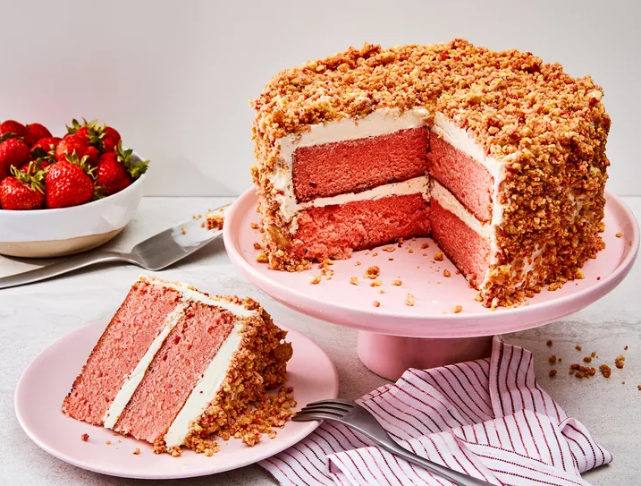

Strawberry Crumb Cake

Description
Remember the strawbery crunch ice cream bars you loved as a kid? This take, in cake form, has the same sweet taste and satisfying texture.
Ingredients:
Cake:
- Baking spray with flour
- 3 tablespoons strawberry-flavored gelatin, such as Jell-O (from 1 (3 ounce) package)
- 1 teaspoon baking powder
- 1 teaspoon kosher salt
- 1/2 teaspoon baking soda
- 1 cup unsalted butter, softened
- 2 cups granulated sugar
- 3 large eggs
- 2 teaspoons vanilla extract
- 1 1/2 cups whole buttermilk
Frosting:
- 1 1/2 cups unsalted butter, softened
- 1/4 teaspoon kosher salt
- 1 tablespoon vanilla extract
- 4 cups powdered sugar, sifted
- 2 tablespoons heavy cream, or more if needed
Crumble::
- 25 golden Oreo cookies
- 2/3 cup freeze-dried strawberries
- 1/8 teaspoon kosher salt
- 4 tablespoons melted unsalted butter
Directions:
- Preheat the oven to 350 degrees F (175 degrees C). Coat 2 (8-inch) round cake pans with baking spray with flour and line bottoms with parchment.
- To make the cake: Whisk flour, gelatin, baking powder, salt, and baking soda together in a bowl.
- Beat butter at medium speed until creamy, 2 to 3 minutes in the bowl of a stand mixer fitted with the paddle attachment. Gradually add sugar, beating until light and fluffy, about 3 minutes. Add eggs, 1 at a time, beating on low speed and scraping down sides of bowl as needed, until just combined. Beat in vanilla.
- Add flour mixture in 3 additions alternately with buttermilk, beginning and ending with flour mixture and beating on low speed just until combined after each addition. Divide batter evenly between prepared pans.
- Bake in the preheated oven until a wooden pick inserted in center comes out clean, about 40 minutes.
- Cool in pans on a wire rack for 10 minutes; remove cakes from pans and cool completely on a wire rack, 1 to 1 1/2 hours
- To make the frosting: Add butter and salt to the bowl of a stand mixer fitted with the paddle attachment. Beat on medium speed until creamy, about 3 minutes. Beat in vanilla.
- Gradually add powdered sugar, alternately with cream, beating on low speed until completely incorporated and smooth. Increase mixer speed to medium-high and beat until smooth and fluffy, 2 to 3 minutes.
- To make the crumble mixture: Place cookies, strawberries, and salt in a food processor and pulse until slightly chunky (bits of strawberry and cookie should still be visible), about 12 pulses. Drizzle in butter and pulse about 5 times to combine.
- Trim tops of cakes with a serrated knife if needed to make flat on top.
- Place 1 cake layer on serving platter; spread evenly with 1 cup frosting. Top with remaining cake layer.
- Spread top and sides of cake with the remaining frosting.
- Sprinkle crumble mixture over top and sides of cake, pressing lightly to adhere until completely covered. Chill cake for 1 hour before slicing.